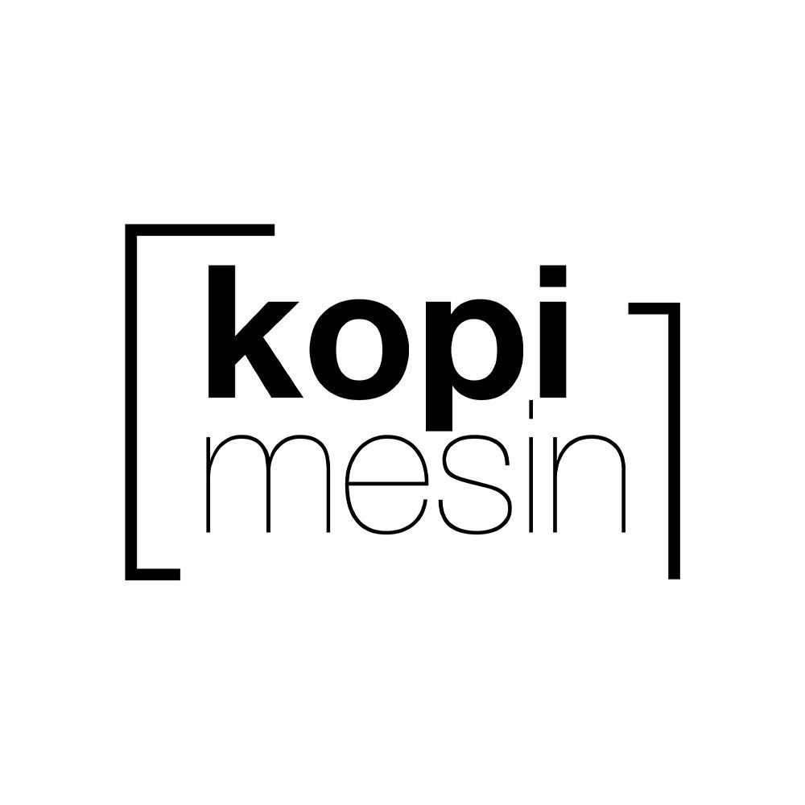

Home
Menu
About Us
Contact
Kelantan Branch
Kubang Kerian
Instagram
Kopi Mesin Kubang Kerian
Kota Bharu
Facebook
Kopi Mesin Kota Bharu
Pasir Mas
Instagram
Kopi Mesin Pasir Mas
Terengganu Branch
Jertih
Instagram
Kopi Mesin Jertih
Besut
Instagram
Kopi Mesin Kuala Besut
Kampung Raja
Instagram
Kopi Mesin Kampung Raja
Kuala Terengganu
Instagram
Kopi Mesin Durian Burung